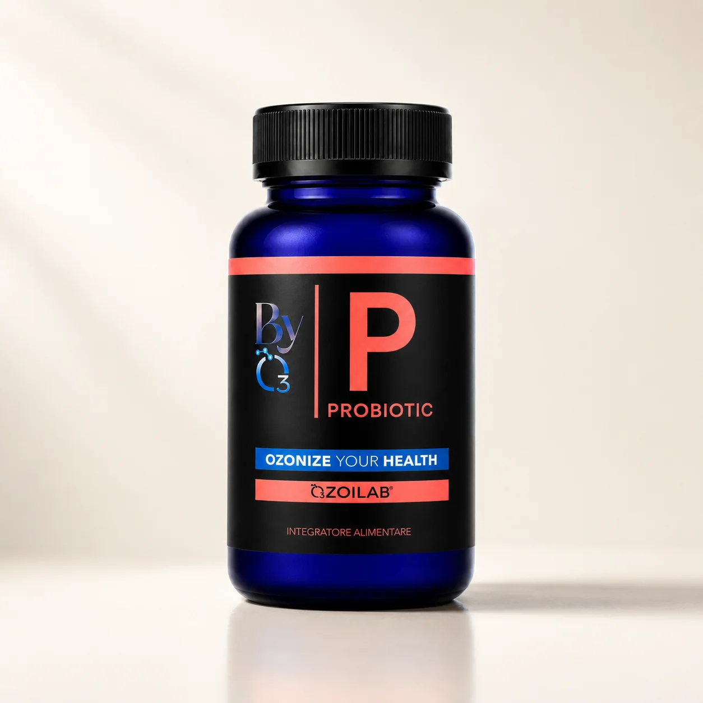
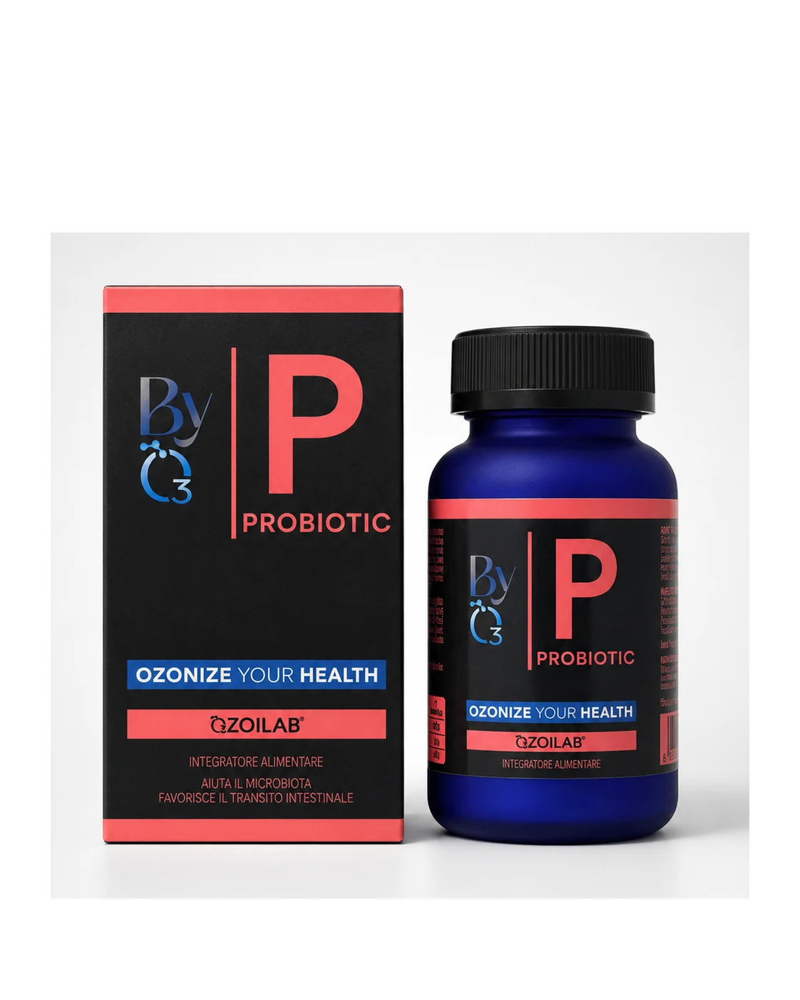
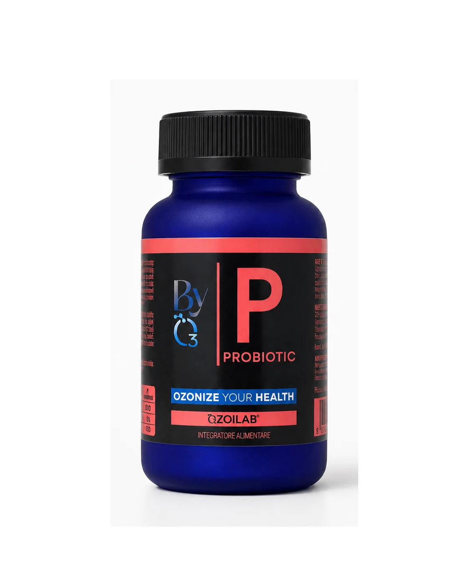
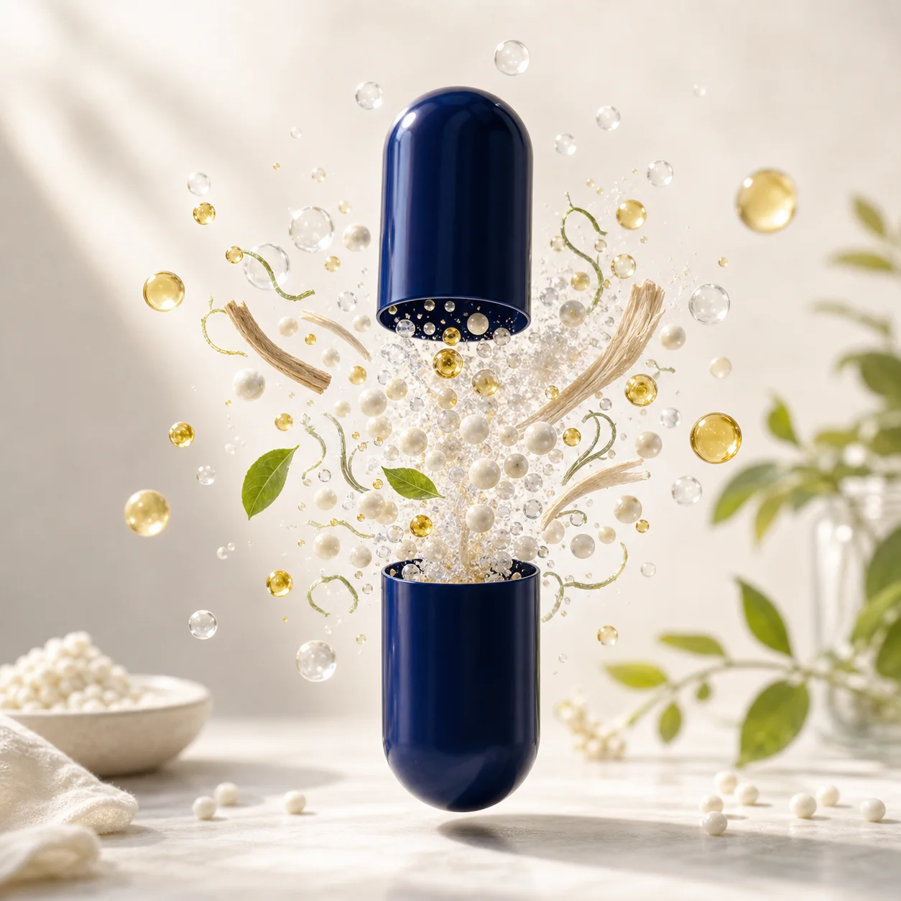

Mix probiotico
Ecologic® 500 unisce ceppi Bifidobacterium, Lactobacillus e Lactococcus.




Ozonize Your Health
Una formula quotidiana che abbina probiotici selezionati e OZOILAB® per sostenere microbiota, transito intestinale e apparato digerente.
Ecologic® 500 unisce ceppi Bifidobacterium, Lactobacillus e Lactococcus.
Olio ozonizzato come componente differenziante della formula.
Lactobacillus acidophilus in una formula dedicata al benessere intestinale.
Due capsule al mattino, dentro una routine mensile.
Probiotic racconta la sinergia tra olio ozonizzato e ceppi probiotici senza trasformarla in promessa terapeutica.
La pagina mette al centro il razionale della formula, non una promessa istantanea.
Non sostituisce una dieta varia ed equilibrata. In caso di condizioni specifiche chiedere un parere professionale.
2 capsule al giorno, preferibilmente al mattino.
Cambi alimentari, viaggi, stress o routine intestinale.
Non indicato in caso di deficit G6PD/favismo.